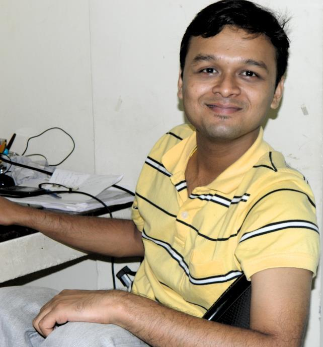

Indresh Kumar Verma
Research Scholar (Dept. of Design, IIT Guwahati),
M.Des, B.E.
Publications
- Verma, I.K. and Karmakar, S., 2020. Positioning of the Mobile Phone to Minimize Driver’s Biomechanical Effort During Navigation: DHM-Based Approach. Journal of The Institution of Engineers (India): Series C. [Print ISSN: 2250-0545] [Springer]. [https://doi.org/10.1007/s40032-020-00580-9]
- Verma, I., Nath, S. and Karmakar, S., 2018. Research in Driver--Vehicle Interaction: Indian Scenario. In: Ergonomics in Caring for People, 353-361. [ISBN 978-981-10-4980-4][Springer, Singapore].[doi.org/10.1007/978-981-10-4980-4_43]
- Verma, I. K., and Karmakar, S., 2017. Driver Distraction: Methodological Review. In: A. Chakrabarti and D. Chakrabarti (eds.), ICoRD '17 - Research into Design for Communities, Volume 1, 849 - 860. [ISBN 978-981-10-3517-3] [Spinger] [doi.org/10.1007/978-981-10-3518-0_73]